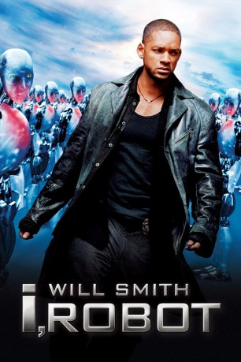

 
 IMDB-Wertung: 7.1 / 10
IMDB-Wertung: 7.1 / 10  Metascore:
Metascore: 
Chicago, 2035: Fast jeder Haushalt verfügt über einen Roboter. Die hoch entwickelten Maschinenwesen verrichten für ihre Besitzer alltägliche Arbeiten wie Einkäufe erledigen oder den Hund ausführen. Spezielle Sicherheitsvorkehrungen in der Programmierung sorgen für ein ungefährliches Zusammenleben mit den Menschen. Nur der leicht paranoide Detective Del Spooner traut ihnen nicht. Als er in einem Mordfall ermittelt, in dem der Roboter Sonny der Hauptverdächtige ist, sieht er sich in seinem Misstrauen bestätigt. Mit Hilfe der Roboterpsychologin Dr. Susan Calvin versucht Del Spooner den mysteriösen Fall zu lösen und macht dabei eine schreckliche Entdeckung.
Jahr: 2004
Dauer: 115 Minuten
FSK: 12
Land: USA Studio: 20th Century FoxTonspuren: DTS - ,
Untertitel: Deutsch,
Auflösung: 1080p (1920x1080) Größe: 8171 MB
Genre: Action, Mystery, Sci-Fi, Thriller
Regisseur: Alex Proyas
Drehbuch: Jeff Vintar, Akiva Goldsman, Jeff Vintar, Isaac Asimov
Soundtrack: Marco Beltrami
Darsteller:
 Will Smith als Del Spooner
Will Smith als Del Spooner Bridget Moynahan als Susan Calvin
Bridget Moynahan als Susan Calvin Alan Tudyk als Sonny
Alan Tudyk als Sonny James Cromwell als Dr. Alfred Lanning
James Cromwell als Dr. Alfred Lanning Bruce Greenwood als Lawrence Robertson
Bruce Greenwood als Lawrence Robertson Chi McBride als Lt. John Bergin
Chi McBride als Lt. John Bergin Jerry Wasserman als Baldez
Jerry Wasserman als Baldez Peter Shinkoda als Chin
Peter Shinkoda als Chin Terry Chen als Chin
Terry Chen als Chin Scott Heindl als NS4 Robot / NS5 Robot
Scott Heindl als NS4 Robot / NS5 Robot Sharon Wilkins als Asthmatic Woman
Sharon Wilkins als Asthmatic Woman Craig March als Detective
Craig March als Detective Darren Moore als Homeless Man
Darren Moore als Homeless Man Aaron Douglas als USR Attorney #1
Aaron Douglas als USR Attorney #1 Emily Tennant als Young Girl
Emily Tennant als Young Girl Shia LaBeouf als Farber
Shia LaBeouf als Farber Michael St. John Smith als USR Attorney #2
Michael St. John Smith als USR Attorney #2 Tiffany Lyndall-Knight als Mob Woman
Tiffany Lyndall-Knight als Mob Woman Simon Baker als Farber Posse
Simon Baker als Farber Posse Justin Rodgers Hall als Cop , uncredited
Justin Rodgers Hall als Cop , uncredited Phillip Mitchell als NS5 Robot , uncredited
Phillip Mitchell als NS5 Robot , uncredited Ian A. Wallace als NS4 Robot / NS5 Robot , uncredited
Ian A. Wallace als NS4 Robot / NS5 Robot , uncredited Lynnanne Zager als Newscaster / Computers , uncredited
Lynnanne Zager als Newscaster / Computers , uncreditedDatei: X:\2004(G-M)\I, Robot (2004, FSK12, 1920x1080) 3D.mkv seit 13.11.2015
Festplatte: HD 2003-2004-2005(A-F)
 Es gibt insgesamt 41 Filme in der Gruppe '2004(G-M)'
Es gibt insgesamt 41 Filme in der Gruppe '2004(G-M)'